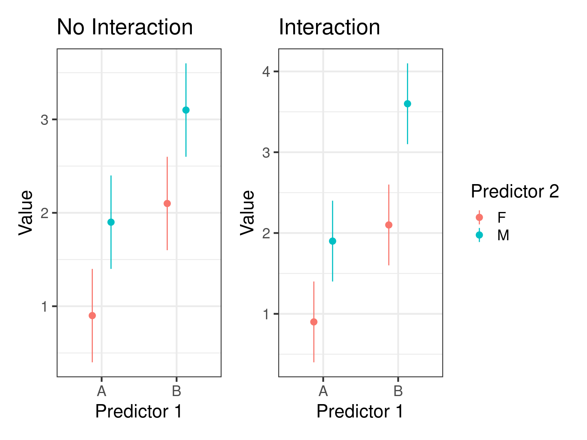
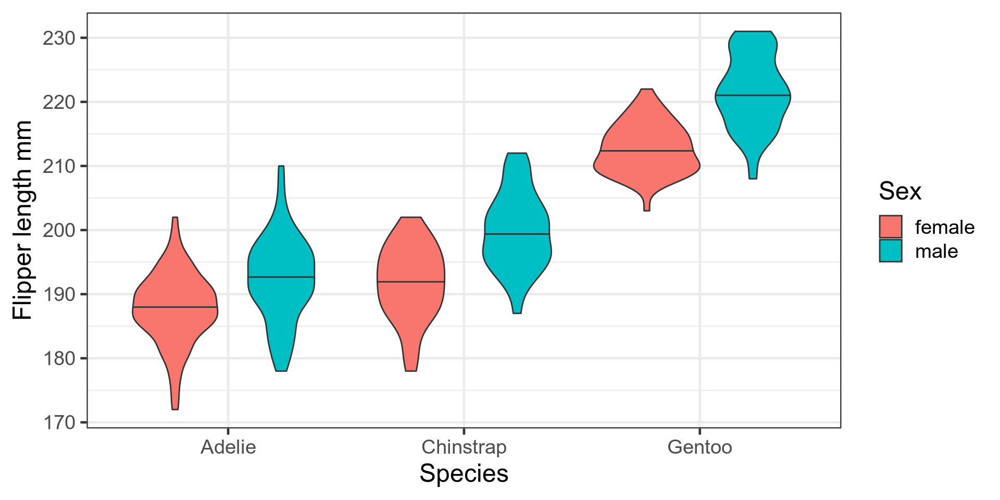

Bio300B Lecture 8
Institutt for biovitenskap, UiB
17 October 2022
# Two way anova - two categorical predictors
mod_anova2 <- lm(bill_length_mm ~ sex + species, data = penguins)
# ancova - one categorical one continuous predictor
mod_ancova <- lm(bill_length_mm ~ sex + flipper_length_mm, data = penguins)
# Multiple regression - two continuous
mod_mult <- lm(bill_length_mm ~ body_mass_g + flipper_length_mm, data = penguins)
Call:
lm(formula = bill_length_mm ~ sex + species, data = penguins)
Residuals:
Min 1Q Median 3Q Max
-6.087 -1.377 -0.071 1.225 11.013
Coefficients:
Estimate Std. Error t value Pr(>|t|)
(Intercept) 36.977 0.231 160.2 <2e-16 ***
sexmale 3.694 0.255 14.5 <2e-16 ***
speciesChinstrap 10.010 0.341 29.3 <2e-16 ***
speciesGentoo 8.698 0.287 30.3 <2e-16 ***
---
Signif. codes: 0 '***' 0.001 '**' 0.01 '*' 0.05 '.' 0.1 ' ' 1
Residual standard error: 2.32 on 329 degrees of freedom
(11 observations deleted due to missingness)
Multiple R-squared: 0.821, Adjusted R-squared: 0.819
F-statistic: 503 on 3 and 329 DF, p-value: <2e-16
Call:
lm(formula = bill_length_mm ~ sex + flipper_length_mm, data = penguins)
Residuals:
Min 1Q Median 3Q Max
-9.720 -2.812 -0.812 2.021 19.764
Coefficients:
Estimate Std. Error t value Pr(>|t|)
(Intercept) -4.4669 3.2364 -1.38 0.17
sexmale 2.0727 0.4568 4.54 8e-06 ***
flipper_length_mm 0.2359 0.0163 14.46 <2e-16 ***
---
Signif. codes: 0 '***' 0.001 '**' 0.01 '*' 0.05 '.' 0.1 ' ' 1
Residual standard error: 4.03 on 330 degrees of freedom
(11 observations deleted due to missingness)
Multiple R-squared: 0.46, Adjusted R-squared: 0.457
F-statistic: 141 on 2 and 330 DF, p-value: <2e-16
Call:
lm(formula = bill_length_mm ~ body_mass_g + flipper_length_mm,
data = penguins)
Residuals:
Min 1Q Median 3Q Max
-8.806 -2.590 -0.705 1.991 18.829
Coefficients:
Estimate Std. Error t value Pr(>|t|)
(Intercept) -3.436694 4.580553 -0.75 0.45
body_mass_g 0.000662 0.000567 1.17 0.24
flipper_length_mm 0.221865 0.032348 6.86 3.3e-11 ***
---
Signif. codes: 0 '***' 0.001 '**' 0.01 '*' 0.05 '.' 0.1 ' ' 1
Residual standard error: 4.12 on 339 degrees of freedom
(2 observations deleted due to missingness)
Multiple R-squared: 0.433, Adjusted R-squared: 0.43
F-statistic: 129 on 2 and 339 DF, p-value: <2e-16Effect of one predictor depends on value of another

Call:
lm(formula = flipper_length_mm ~ species * sex, data = penguins)
Residuals:
Min 1Q Median 3Q Max
-15.795 -3.411 0.088 3.459 17.589
Coefficients:
Estimate Std. Error t value Pr(>|t|)
(Intercept) 187.795 0.662 283.72 < 2e-16 ***
speciesChinstrap 3.941 1.174 3.36 0.00088 ***
speciesGentoo 24.912 0.995 25.04 < 2e-16 ***
sexmale 4.616 0.936 4.93 1.3e-06 ***
speciesChinstrap:sexmale 3.560 1.661 2.14 0.03278 *
speciesGentoo:sexmale 4.218 1.397 3.02 0.00274 **
---
Signif. codes: 0 '***' 0.001 '**' 0.01 '*' 0.05 '.' 0.1 ' ' 1
Residual standard error: 5.66 on 327 degrees of freedom
(11 observations deleted due to missingness)
Multiple R-squared: 0.84, Adjusted R-squared: 0.837
F-statistic: 342 on 5 and 327 DF, p-value: <2e-16
Call:
lm(formula = bill_length_mm ~ sex * flipper_length_mm, data = adelie)
Residuals:
Min 1Q Median 3Q Max
-6.395 -1.329 0.029 1.427 5.438
Coefficients:
Estimate Std. Error t value Pr(>|t|)
(Intercept) 39.7935 8.3528 4.76 4.6e-06 ***
sexmale -20.2163 11.0648 -1.83 0.070 .
flipper_length_mm -0.0135 0.0445 -0.30 0.762
sexmale:flipper_length_mm 0.1217 0.0583 2.09 0.039 *
---
Signif. codes: 0 '***' 0.001 '**' 0.01 '*' 0.05 '.' 0.1 ' ' 1
Residual standard error: 2.11 on 142 degrees of freedom
(6 observations deleted due to missingness)
Multiple R-squared: 0.385, Adjusted R-squared: 0.372
F-statistic: 29.6 on 3 and 142 DF, p-value: 6.43e-15
Call:
lm(formula = flipper_length_mm ~ body_mass_g * bill_length_mm,
data = adelie)
Residuals:
Min 1Q Median 3Q Max
-14.480 -3.111 0.044 3.481 16.818
Coefficients:
Estimate Std. Error t value Pr(>|t|)
(Intercept) 2.07e+02 5.70e+01 3.63 0.00039 ***
body_mass_g -7.01e-03 1.52e-02 -0.46 0.64454
bill_length_mm -1.01e+00 1.47e+00 -0.68 0.49640
body_mass_g:bill_length_mm 3.31e-04 3.88e-04 0.85 0.39406
---
Signif. codes: 0 '***' 0.001 '**' 0.01 '*' 0.05 '.' 0.1 ' ' 1
Residual standard error: 5.8 on 147 degrees of freedom
(1 observation deleted due to missingness)
Multiple R-squared: 0.23, Adjusted R-squared: 0.214
F-statistic: 14.6 on 3 and 147 DF, p-value: 2.2e-08set.seed(42)
sigma = 10
n <- 1000
random <- tibble(x = sample(c("A", "B"), n, replace = TRUE),
z = sample(factor(1:2), n, replace = TRUE),
y = rnorm(n, mean = 0, sd = sigma))
lm(y ~ x*z, data = random) |> tidy()# A tibble: 4 × 5
term estimate std.error statistic p.value
<chr> <dbl> <dbl> <dbl> <dbl>
1 (Intercept) 0.281 0.615 0.457 0.647
2 xB -1.90 0.864 -2.20 0.0280
3 z2 0.759 0.880 0.863 0.388
4 xB:z2 1.06 1.24 0.849 0.396 y ~ x + z + x:z
y ~ x * z
y ~ (x + z)^2
Use y ~ x + I(x^2) to get a quadratic. Or y ~ poly(x, 2)
mod1 <- lm(flipper_length_mm ~ species + sex + species:sex, data = penguins)
mod2 <- lm(flipper_length_mm ~ species * sex, data = penguins)
mod3 <- lm(flipper_length_mm ~ (species + sex)^2, data = penguins)
coef(mod1) (Intercept) speciesChinstrap speciesGentoo
187.795 3.941 24.912
sexmale speciesChinstrap:sexmale speciesGentoo:sexmale
4.616 3.560 4.218 (Intercept) speciesChinstrap speciesGentoo
187.795 3.941 24.912
sexmale speciesChinstrap:sexmale speciesGentoo:sexmale
4.616 3.560 4.218 (Intercept) speciesChinstrap speciesGentoo
187.795 3.941 24.912
sexmale speciesChinstrap:sexmale speciesGentoo:sexmale
4.616 3.560 4.218 You want to the best model!
The best model for what?
The more biology you include in the model
Last resort - many problems and biases
Forward selection
Backwards selection
All possible models
AIC Akaike information criterion \(2k - 2 \times log(likelihood)\)
(k the number of parameters)
Measure of how well the model fit the data
Penalised for model complexity
AICc correction for small sample sizes
AIC weights - probability model is best of those tested
Global model call: lm(formula = body_mass_g ~ ., data = penguins2, na.action = "na.fail")
---
Model selection table
(Int) bll_dpt_mm bll_lng_mm flp_lng_mm isl sex spc df logLik AICc delta
56 -1461.0 67.22 18.200 15.95 + + 8 -2354 4724 0.00
64 -1500.0 67.58 18.190 16.24 + + + 10 -2354 4728 3.54
54 -1212.0 74.38 17.54 + + 7 -2357 4729 4.54
62 -1245.0 74.51 17.85 + + + 9 -2357 4732 8.03
55 -759.1 21.630 17.85 + + 7 -2360 4734 9.54
63 -785.6 21.530 18.14 + + + 9 -2359 4738 13.15
53 -365.8 20.02 + + 6 -2364 4741 16.65
61 -390.0 20.32 + + + 8 -2364 4744 20.12
52 844.0 87.93 26.540 + + 7 -2369 4752 27.26
60 829.8 88.33 26.660 + + + 9 -2369 4756 31.39
50 1577.0 102.00 + + 6 -2375 4763 38.57
58 1576.0 102.10 + + + 8 -2375 4767 42.75
51 2169.0 32.540 + + 6 -2378 4768 43.90
59 2168.0 32.540 + + + 8 -2378 4772 48.09
40 -4282.0 141.80 39.720 20.23 + 7 -2385 4784 59.63
49 3372.0 + + 5 -2388 4786 61.39
48 -4324.0 141.80 39.600 20.58 + + 9 -2384 4786 62.05
57 3376.0 + + + 7 -2388 4790 65.44
30 -2219.0 -50.03 35.69 + + 7 -2397 4807 82.98
32 -2116.0 -50.34 6.052 33.94 + + 8 -2396 4808 83.57
38 -4485.0 182.00 25.53 + 6 -2400 4811 86.96
46 -4524.0 181.50 25.95 + + 8 -2399 4814 89.25
29 -3720.0 39.30 + + 6 -2401 4815 90.41
31 -3630.0 5.808 37.64 + + 7 -2401 4816 91.14
36 -1710.0 180.80 54.060 + 6 -2405 4822 97.44
44 -1735.0 181.30 54.250 + + 8 -2404 4825 100.78
39 -3864.0 60.120 27.54 + 6 -2411 4834 109.08
22 -2247.0 -86.95 38.19 + 5 -2412 4834 109.70
24 -2288.0 -86.09 -2.329 38.83 + 6 -2412 4836 111.53
47 -3903.0 59.870 27.96 + + 8 -2410 4836 111.69
21 -5410.0 46.98 + 4 -2427 4863 138.22
23 -5434.0 -5.201 48.21 + 5 -2427 4864 139.13
34 -1001.0 256.60 + 5 -2431 4871 146.98
42 -1015.0 257.20 + + 7 -2430 4875 150.70
16 -5707.0 51.24 13.750 42.90 + 7 -2438 4891 166.75
14 -6115.0 56.67 47.40 + 6 -2441 4895 170.82
37 -4013.0 40.61 + 5 -2443 4896 171.07
45 -4048.0 41.09 + + 7 -2442 4898 173.11
35 200.5 90.300 + 5 -2444 4899 174.47
15 -4355.0 16.880 39.66 + 6 -2445 4902 177.78
43 182.0 90.510 + + 7 -2444 4903 178.29
13 -4688.0 44.89 + 5 -2450 4909 184.81
6 -6538.0 19.88 51.77 4 -2460 4928 203.67
5 -5872.0 50.15 3 -2461 4928 203.84
7 -5836.0 4.959 48.89 4 -2461 4929 204.97
8 -6445.0 17.84 3.293 50.76 5 -2460 4930 205.35
28 4785.0 -155.10 44.770 + + 7 -2470 4955 230.24
27 1747.0 60.620 + + 6 -2505 5022 297.54
20 6551.0 -257.30 36.520 + 5 -2507 5023 299.04
26 7580.0 -211.50 + + 6 -2506 5024 299.24
33 3706.0 + 4 -2513 5035 310.28
41 3710.0 + + 6 -2513 5039 314.41
18 8779.0 -299.30 + 4 -2529 5066 341.86
12 1697.0 -26.23 76.000 + 6 -2537 5086 361.23
11 1239.0 76.910 + 5 -2538 5086 361.35
25 4376.0 + + 5 -2562 5133 409.06
4 3413.0 -145.50 74.810 4 -2595 5199 474.20
19 746.1 74.020 + 4 -2614 5236 512.01
10 5590.0 -54.76 + 5 -2615 5240 516.03
9 4719.0 + 4 -2618 5244 519.96
3 388.8 86.790 3 -2629 5264 539.83
2 7520.0 -193.00 3 -2658 5322 598.05
17 3862.0 + 3 -2667 5340 615.65
1 4207.0 2 -2700 5404 679.94
weight
56 0.768
64 0.131
54 0.079
62 0.014
55 0.007
63 0.001
53 0.000
61 0.000
52 0.000
60 0.000
50 0.000
58 0.000
51 0.000
59 0.000
40 0.000
49 0.000
48 0.000
57 0.000
30 0.000
32 0.000
38 0.000
46 0.000
29 0.000
31 0.000
36 0.000
44 0.000
39 0.000
22 0.000
24 0.000
47 0.000
21 0.000
23 0.000
34 0.000
42 0.000
16 0.000
14 0.000
37 0.000
45 0.000
35 0.000
15 0.000
43 0.000
13 0.000
6 0.000
5 0.000
7 0.000
8 0.000
28 0.000
27 0.000
20 0.000
26 0.000
33 0.000
41 0.000
18 0.000
12 0.000
11 0.000
25 0.000
4 0.000
19 0.000
10 0.000
9 0.000
3 0.000
2 0.000
17 0.000
1 0.000
Models ranked by AICc(x) Analysis of Variance Table
Response: body_mass_g
Df Sum Sq Mean Sq F value Pr(>F)
species 2 1.45e+08 72595110 724 <2e-16 ***
sex 1 3.71e+07 37090262 370 <2e-16 ***
Residuals 329 3.30e+07 100241
---
Signif. codes: 0 '***' 0.001 '**' 0.01 '*' 0.05 '.' 0.1 ' ' 1Analysis of Variance Table
Response: body_mass_g
Df Sum Sq Mean Sq F value Pr(>F)
sex 1 3.89e+07 38878897 388 <2e-16 ***
species 2 1.43e+08 71700792 715 <2e-16 ***
Residuals 329 3.30e+07 100241
---
Signif. codes: 0 '***' 0.001 '**' 0.01 '*' 0.05 '.' 0.1 ' ' 1Anova Table (Type II tests)
Response: body_mass_g
Sum Sq Df F value Pr(>F)
species 1.43e+08 2 715 <2e-16 ***
sex 3.71e+07 1 370 <2e-16 ***
Residuals 3.30e+07 329
---
Signif. codes: 0 '***' 0.001 '**' 0.01 '*' 0.05 '.' 0.1 ' ' 1Anova Table (Type II tests)
Response: body_mass_g
Sum Sq Df F value Pr(>F)
sex 3.71e+07 1 370 <2e-16 ***
species 1.43e+08 2 715 <2e-16 ***
Residuals 3.30e+07 329
---
Signif. codes: 0 '***' 0.001 '**' 0.01 '*' 0.05 '.' 0.1 ' ' 1Test small number of a priori hypothesis.
Use anova() to compare nested models
H0 there is no interaction between sex and species for predicting flipper length
mod1 <- lm(body_mass_g ~ species + sex, data = penguins)
mod2 <- lm(body_mass_g ~ species * sex, data = penguins)
anova(mod1, mod2)Analysis of Variance Table
Model 1: body_mass_g ~ species + sex
Model 2: body_mass_g ~ species * sex
Res.Df RSS Df Sum of Sq F Pr(>F)
1 329 32979185
2 327 31302628 2 1676557 8.76 2e-04 ***
---
Signif. codes: 0 '***' 0.001 '**' 0.01 '*' 0.05 '.' 0.1 ' ' 1Two or more predictor variables in a multiple regression model are highly correlated. Example: pH and calcium
Coefficient estimates may change erratically in response to small changes in the model or the data.
Solve by having lots of data